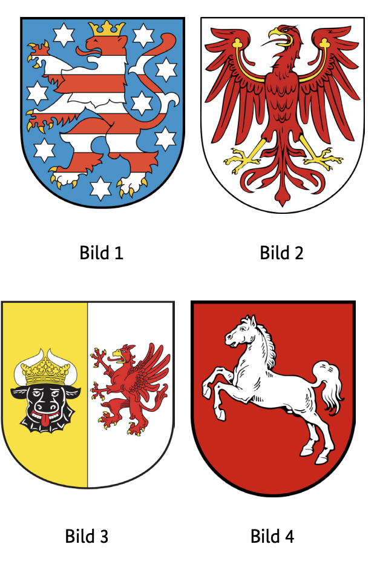

Leben in Deutschland Mecklenburg-Vorpommern Soruları
Resmi BAMF soru havuzundaki 10 Mecklenburg-Vorpommern (MV) eyalet sorusunun Almanca ve Türkçe açıklamalı interaktif çözümleri. Soru üzerine tıklayarak bilginizi anında test edin.
Welches Wappen gehört zum Bundesland Mecklenburg-Vorpommern?
TR: Mecklenburg-Vorpommern devletine hangi arma aittir?

✅ Doğru Cevap: Şık C (Bild 3)
Almanya'da her eyaletin kendine özgü semboller ve renklerle bir arması vardır. Bu armalarda genellikle hayvanlar, armatik görüntüler veya tarihsel olarak ilgili bölgeyi temsil eden renkler gösterilir. Görevde birkaç arma tasvir edilip numaralandırılmıştır. Göreviniz, Alman devletleri hakkındaki bilginizi kullanarak bu armalardan hangilerinin Mecklenburg-Vorpommern devletini temsil ettiğini belirlemek.
In Deutschland hat jedes Bundesland ein eigenes Wappen mit typischen Symbolen und Farben. Diese Wappen zeigen oft Tiere, Wappenbilder oder Farben, die historisch für die jeweilige Region stehen. In der Aufgabe sind mehrere Wappen abgebildet und nummeriert. Deine Aufgabe ist es, anhand deines Wissens über deutsche Bundesländer zu erkennen, welches dieser Wappen das Bundesland Mecklenburg-Vorpommern repräsentiert.
In Germany, each state has its own coat of arms with typical symbols and colors. These coats of arms often show animals, heraldic images or colours that historically stand for the respective region. In the task, several coats of arms are depicted and numbered. Your task is to use your knowledge of German states to identify which of these coats of arms represents the state of Mecklenburg-Vorpommern.
في ألمانيا، لكل ولاية شعارها الخاص بالرموز والألوان النموذجية. غالبا ما تظهر هذه الشعارات، أو صورا شعارية أو ألوانا ترمز تاريخيا إلى المنطقة المعنية. في المهمة، تم تصوير عدة شعارات وترقيم. مهمتك هي استخدام معرفتك بالدول الألمانية لتحديد أي من هذه الشعارات تمثل ولاية مكلنبورغ-فوربومرن.
У Німеччині кожна земля має власний герб із типовими символами та кольорами. Ці герби часто зображують тварин, геральдичні зображення або кольори, які історично символізують відповідний регіон. У цьому завданні зображено та пронумеровано кілька гербів. Ваше завдання — використати знання німецьких держав, щоб визначити, який із цих гербів представляє землю Мекленбург-Передня Померанія.
Welches ist ein Landkreis in Mecklenburg-Vorpommern?
TR: Mecklenburg-Vorpommern'de hangi bir ilçe?
✅ Doğru Cevap: Şık B (Mecklenburgische Seenplatte)
Soru, Almanya hakkında temel coğrafi bilgiye atıfta bulunur. Alman bölgelerinin bilinip bilinmediğini ve doğru federal eyaletlere atanabiliyor olup olmadığını kontrol eder. Çoktan seçmeli görevde, her biri Almanya'nın farklı bölgelerinde bulunan birkaç ilçe adlandırılır ve hangisinin Mecklenburg-Vorpommern eyaletinde olduğu sorulur.
Die Frage bezieht sich auf geografisches Grundwissen über Deutschland. Sie prüft, ob man deutsche Landkreise kennt und diese den richtigen Bundesländern zuordnen kann. In der Multiple-Choice-Aufgabe werden mehrere Landkreise genannt, die jeweils in unterschiedlichen Regionen Deutschlands liegen können, und gefragt wird, welcher davon im Bundesland Mecklenburg-Vorpommern liegt.
The question refers to basic geographical knowledge about Germany. It checks whether German districts are known and can be assigned to the correct federal states. In the multiple-choice task, several districts are named, each of which can be located in different regions of Germany, and it is asked which of them is located in the state of Mecklenburg-Vorpommern.
السؤال يشير إلى المعرفة الجغرافية الأساسية عن ألمانيا. يتحقق من ما إذا كانت المناطق الألمانية معروفة ويمكن تعيينها للولايات الفيدرالية الصحيحة. في مهمة الاختيار من متعدد، يتم تسمية عدة مناطق، يمكن أن تقع كل منها في مناطق مختلفة من ألمانيا، ويسأل أي منها يقع في ولاية مكلنبورغ-فوربومرن.
Питання стосується базових географічних знань про Німеччину. Він перевіряє, чи відомі німецькі округи і чи можуть бути призначені відповідним федеральним землям. У завданні з вибором вибору називаються кілька районів, кожен з яких може розташовуватися в різних регіонах Німеччини, і запитується, який із них розташований у землі Мекленбург-Передня Померанія.
Welche Farben hat die Landesflagge von Mecklenburg-Vorpommern?
TR: Mecklenburg-Batı Pomeranya devlet bayrağı hangi renklere sahip?
✅ Doğru Cevap: Şık B (blau-weiß-gelb-rot)
Soru, Alman federal eyaletleri ve resmi sembolleri hakkında bilgi sahibi olmakla ilgilidir. Mecklenburg-Batı Pomeranya, kuzeydoğu Almanya'da kendi devlet bayrağı olan bir eyalettir. Doğru cevabı bulmak için bu bayrağın hangi renkleri taşıdığını bilmelisiniz. Bu tür sorular genellikle coğrafya, siyaset veya genel bilgi sınavlarında, özellikle Alman devletleri ve onların devlet özellikleriyle ilgili olarak ortaya çıkar.
Die Frage bezieht sich auf die Kenntnis deutscher Bundesländer und ihrer offiziellen Symbole. Mecklenburg-Vorpommern ist ein Bundesland im Nordosten Deutschlands mit einer eigenen Landesflagge. Um die richtige Antwort zu finden, sollte man wissen, welche Farben diese Flagge trägt. Solche Fragen kommen häufig in Geografie-, Politik- oder Allgemeinwissensquizzen vor, insbesondere im Zusammenhang mit deutschen Ländern und deren staatlichen Kennzeichen.
The question refers to the knowledge of German federal states and their official symbols. Mecklenburg-Western Pomerania is a state in northeastern Germany with its own state flag. To find the right answer, you should know what colors this flag wears. Such questions often appear in geography, politics or general knowledge quizzes, especially in connection with German states and their state characteristics.
السؤال يتعلق بمعرفة الولايات الفيدرالية الألمانية ورموزها الرسمية. مكلنبورغ-بوميرانيا الغربية هي ولاية تقع في شمال شرق ألمانيا ولها علم ولاية خاص بها. للعثور على الإجابة الصحيحة، يجب أن تعرف الألوان التي يرتديها هذا العلم. غالبا ما تظهر مثل هذه الأسئلة في اختبارات الجغرافيا أو السياسة أو المعرفة العامة، خاصة فيما يتعلق بالدول الألمانية وخصائص دولتها.
Питання стосується знань про німецькі федеративні землі та їхні офіційні символи. Мекленбург-Передня Померанія — це земля на північному сході Німеччини, яка має власний державний прапор. Щоб знайти правильну відповідь, потрібно знати, які кольори носить цей прапор. Такі питання часто виникають у географічних, політичних або загальних тестах, особливо у зв'язку з німецькими державами та їхніми особливостями.
Die Landeshauptstadt von Mecklenburg-Vorpommern heißt …
TR: Mecklenburg-Batı Pomeranya'nın eyalet başkenti ...
✅ Doğru Cevap: Şık B (Schwerin)
Soru, Almanya'nın federal eyaletleri hakkındaki siyasi ve coğrafi bilgiye atıfta bulunur. Her federal eyaletin kendi eyalet başkenti vardır ve hükümet ile parlamento burada bulunur. Mecklenburg-Batı Pomeranya, Almanya'nın kuzeydoğusunda yer almaktadır. Cevap seçenekleri, bu eyaletin tanınmış şehirlerini isimlendiriyor.
Die Frage bezieht sich auf das politische und geografische Wissen über die Bundesländer Deutschlands. Jedes Bundesland besitzt eine eigene Landeshauptstadt, in der sich Regierung und Parlament befinden. Mecklenburg-Vorpommern liegt im Nordosten Deutschlands. Die Antwortmöglichkeiten nennen bekannte Städte aus diesem Bundesland.
The question refers to the political and geographical knowledge about the federal states of Germany. Each federal state has its own state capital, in which the government and parliament are located. Mecklenburg-Western Pomerania is located in the northeast of Germany. The answer options name well-known cities from this state.
السؤال يتعلق بالمعرفة السياسية والجغرافية بالولايات الفيدرالية في ألمانيا. لكل ولاية اتحادية عاصمة ولاية خاصة بها، حيث يقع الحكم والبرلمان. تقع مكلنبورغ-غرب بوميرانيا في شمال شرق ألمانيا. خيارات الإجابة تسمية المدن المعروفة من هذه الولاية.
Питання стосується політичних і географічних знань про федеративні землі Німеччини. Кожна федеральна земля має власну столицю штату, в якій розташовані уряд і парламент. Мекленбург-Передня Померанія розташована на північному сході Німеччини. Варіанти відповідей називають відомі міста цього штату.
Soru, Almanya'nın coğrafyası üzerine bir sınav veya sınavı ifade eder. Federal eyaletler numaralandırılmıştır, örneğin haritada veya bir illüstrasyonda. Bu sayılar, Mecklenburg-Batı Pomeranya eyaletine hangi numaranın atandığını belirlemek için kullanılır.
Die Frage bezieht sich auf ein Quiz oder eine Prüfung zur Geografie Deutschlands. Dabei sind die Bundesländer nummeriert, zum Beispiel auf einer Karte oder in einer Abbildung. Anhand dieser Nummern soll erkannt werden, welche Nummer dem Bundesland Mecklenburg-Vorpommern zugeordnet ist.
The question refers to a quiz or an exam on the geography of Germany. The federal states are numbered, for example on a map or in an illustration. These numbers are used to identify which number is assigned to the state of Mecklenburg-Western Pomerania.
يشير السؤال إلى اختبار أو اختبار عن جغرافية ألمانيا. الولايات الفيدرالية مرقمة، على سبيل المثال على خريطة أو في رسم توضيحي. تستخدم هذه الأرقام لتحديد الرقم المخصص لولاية مكلنبورغ-غرب بوميرانيا.
Питання стосується тесту або іспиту з географії Німеччини. Федеральні землі мають нумерації, наприклад, на карті або в ілюстрації. Ці номери використовуються для ідентифікації, який номер присвоєний землі Мекленбург-Передня Померанія.
Welche Ministerin / welchen Minister hat Mecklenburg-Vorpommern nicht?
TR: Hangi bakanın
Mecklenburg-Batı Pomeranya değil mi?
✅ Doğru Cevap: Şık B (Außenministerin / Außenminister)
Almanya'daki hayat için önemli bir soru
Wichtige Frage für das Leben in Deutschland
Important question for life in Germany
سؤال مهم للحياة في ألمانيا
Важливе питання для життя в Німеччині
300 Genel Soruyu ve Eyalet Sorularını Eksiksiz Çalışın
DeutschLernen LiD Trainer'da tüm 310 soruyu 5 farklı dilde (Türkçe, İngilizce, Arapça, Ukraynaca, Almanca) çözebilir, deneme sınavı simülasyonu yapabilirsiniz.